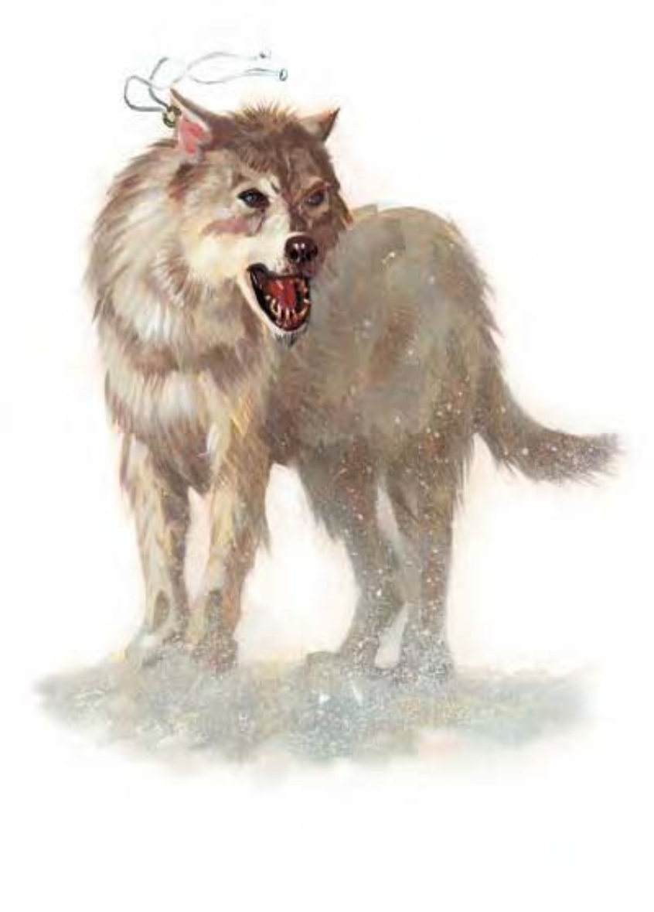

| 资料栏位 | 冬狼 (Winter Wolf) 大型魔法兽 (寒系) |
| 生命骰 | 6d10+18 (51HP) |
| 先攻 | +5 |
| 速度 | 50英尺 (10格) |
| 防御等级 | 15 (-1体型、+1敏捷、+5天生)、接触10、措手不及14 |
| 基本攻击/擒抱 | +6 / +14 |
| 攻击 | 啮咬+9近战 (1d8+6附加1d6寒冷) |
| 全力攻击 | 啮咬+9近战 (1d8+6附加1d6寒冷) |
| 占据/触及 | 10英尺 / 5英尺 |
| 特殊攻击 | 喷吐攻击、冻寒啮咬、阻绊 |
| 特殊能力 | 黑暗视觉60英尺、对寒冷免疫、昏暗视觉、灵敏嗅觉、易受火焰伤害 |
| 豁免 | 强韧+8、反射+6、意志+3 |
| 属性 | 力量18、敏捷13、体质16、智力9、感知13、魅力10 |
| 技能 | 躲藏-1*、聆听+6、潜行+7、侦察+6、生存+1* |
| 专长 | 警觉、精通先攻、追踪 |
| 环境 | 寒冷带森林 |
| 组织 | 单独、成双或一批 (3-5) |
| 挑战级数 | 5 |
| 宝藏 | 十分之一钱币、50%宝物、50%物品 |
| 阵营 | 通常中立邪恶 |
| 进化 | 7-9HD (大型)；10-18HD (超大型) |
| 等级修正值 | +3 (部属) |
冬狼有着湛蓝色双眼和雪白皮毛，高度几乎和马一样，口中喷出冰冷的白烟。
冬狼是栖息在冻原和其他寒冷地区的掠食者，强悍异常，会持续不断追踪直到猎物倒下为止。
冬狼比一般狼类体型来得大，智力也更高，有时会和生活在寒冷区域的其他生物结盟，如：霜巨人，担任斥候、猎食或追踪的工作。
冬狼体长可达8英尺，肩高4.5英尺，重约450磅。
冬狼通晓巨人语和通用语。
战斗冬狼通常成群结队狩猎，因为体型硕大、生性狡猾而且又能进行喷吐攻击，常常可以撂倒体型比本身更加巨大的生物。冬狼群通常会围攻敌人，每只轮流进行攻击拖垮对手体力。如果时间紧迫，冬狼也会尝试压制敌人。
喷吐攻击 (超自然)：15英尺锥状，每1d4轮可使用一次，造成4d6点寒冷伤害，通过反射检定则伤害减半 (DC=16)，豁免检定DC的调整值与体质调整值相同。
冻寒啮咬 (超自然)：每次冬狼的啮咬攻击命中时，可以额外造成1d6点寒冷伤害，就像具有冻寒特殊能力的武器。
阻绊 (特异)：冬狼一旦用啮咬攻击命中目标，就可试着直接以即时动作阻绊对方 (+8检定调整值)，无须进行接触攻击，也不会引发借机攻击。即使失败了，对手也不能反过来阻绊冬狼。
技能：冬狼在进行“聆听”、“潜行”和“侦察”检定时具有+1种族加值。
冬狼在进行“躲藏”检定时具有+2种族加值。*在雪地中，冬狼的白色皮毛使其在进行“躲藏”检定时获得+7种族加值。利用嗅觉进行追踪时，“生存”检定具有+4种族加值。